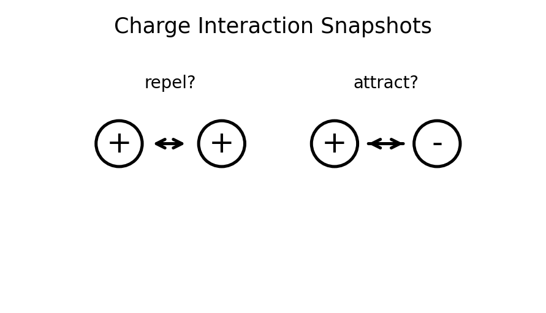
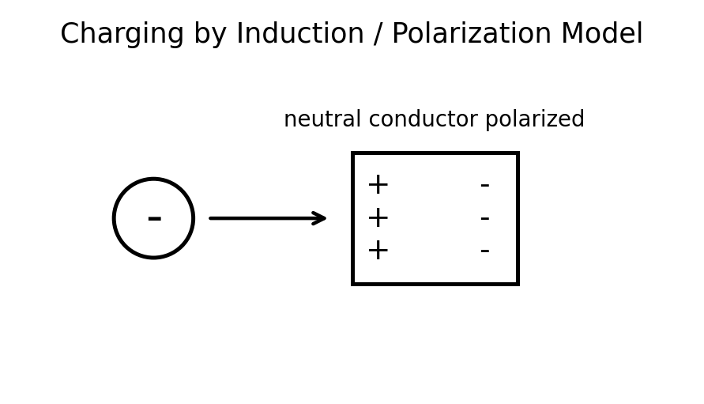
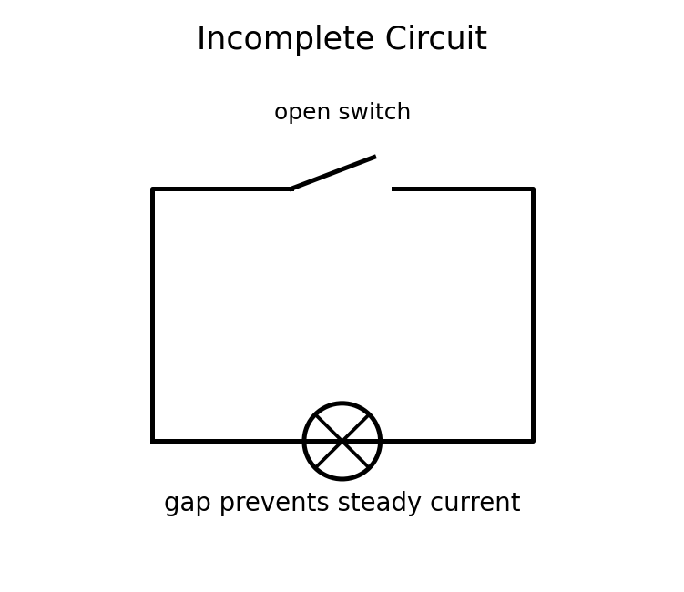
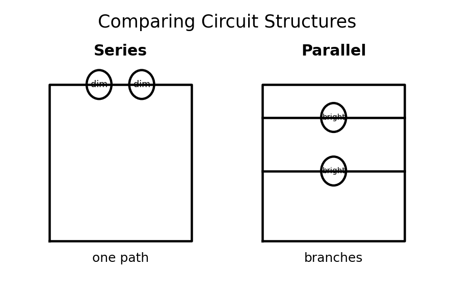

Conceptual Physics — Unit 7: Electricity and Circuits
Assessment Plan
Unit 7: Electricity and Circuits
Essential Standard
Students will analyze electric charge, electric forces, voltage, current, resistance, power, energy, and circuits by modeling how charge interacts, how voltage drives charge flow, how resistance affects current, how electrical energy is transferred, and how series and parallel circuits behave in real-world systems.
This unit remains conceptual before computational. The following formulas and symbolic relationships are enough for the entire unit.
- Coulomb’s Law: $F=k\frac{q_1q_2}{r^2}$
- Electric potential difference: $V=\frac{E}{q}$
- Electric current: $I=\frac{Q}{t}$
- Ohm’s Law: $V=IR$
- Electric power: $P=IV$
- Electrical energy use: $E=Pt$
- Series equivalent resistance: $R_{eq}=R_1+R_2+\cdots$
- Parallel equivalent resistance: $\frac{1}{R_{eq}}=\frac{1}{R_1}+\frac{1}{R_2}+\cdots$
No more than these eight formulas/symbolic relationships should be required for Unit 7 assessments.
Learning Ladder
| Rung | I Can Statement | Science Practice | DOK | Level |
|---|---|---|---|---|
| 8 | I can design, defend, or critique a complete electric-circuit model for an unfamiliar real-world system using diagrams, evidence, formulas, and circuit principles. | Construct Explanations / Argue from Evidence | DOK 4 | Above |
| 7 | I can compare competing explanations of charge behavior, voltage, current, resistance, power, or circuit design and justify which explanation better fits the evidence. | Analyze and Evaluate Models | DOK 4 | Above |
| 6 | I can connect circuit diagrams, data tables, formulas, energy-transfer models, and written scenarios to explain electrical behavior. | Use Models / Explain Phenomena | DOK 3 | Essential |
| 5 | I can identify and correct misconceptions about charge, static electricity, voltage, current, resistance, Ohm’s Law, power, or series and parallel circuits. | Critique Reasoning | DOK 3 | Essential |
| 4 | I can calculate electric force, voltage, current, resistance, power, energy use, or equivalent resistance in simple situations and interpret the answer in context. | Use Mathematical Thinking | DOK 2 | Essential |
| 3 | I can interpret charge diagrams, electric-force diagrams, circuit diagrams, voltage-current graphs, and series/parallel models. | Develop and Use Models | DOK 2 | Essential |
| 2 | I can define and recognize key terms such as charge, conductor, insulator, voltage, current, resistance, circuit, power, energy, series, and parallel. | Identify Patterns / Use Vocabulary | DOK 1 | Essential |
| 1 | I can recognize whether a situation involves static charge, charge transfer, current, voltage, resistance, electrical energy transfer, or a complete circuit. | Observe and Classify | DOK 1 | Essential |
Format: 3–5 minute warm-up, quick check, image prompt, vocabulary check, mini-whiteboard response, card sort, circuit-symbol labeling, charge-interaction sort, or exit ticket
Purpose: Check whether students can recognize basic electricity vocabulary, classify charge interactions, identify simple circuit features, and distinguish charge, voltage, current, resistance, power, and energy.
Assessment Ideas
- Charge Interaction Snapshot Sort Can Be Assessed After Unit 7, Section 7.1 — Students view sketches of charged objects and classify each interaction as attraction, repulsion, polarization, or not enough information.
- Conductor, Insulator, or Charging Process? Can Be Assessed After Unit 7, Section 7.1 — Students classify everyday examples such as a metal doorknob, rubber balloon, wool cloth, and grounded object using conductor/insulator and charging vocabulary.
- Voltage, Current, Resistance Language Check Can Be Assessed After Unit 7, Section 7.3 — Students match voltage, current, resistance, and complete circuit to short descriptions, diagrams, and analogies.
- Series or Parallel Circuit Snapshot Can Be Assessed After Unit 7, Section 7.5 — Students classify simple circuit diagrams as series, parallel, mixed, open, or short circuit.
What this tells the teacher:
Students who struggle here need more support with vocabulary, charge behavior, and basic circuit structure before moving into Ohm’s Law, power, energy, or multi-branch circuit reasoning.
Format: Exit ticket, diagram interpretation, short calculation, circuit task, graph interpretation, data table, ranking task, partner check, or whiteboard response
Purpose: Check whether students can apply formulas, interpret charge and circuit diagrams, compare simple circuits, and connect numerical answers to physical meaning.
Assessment Ideas
- Coulomb’s Law Relationship Task Can Be Assessed After Unit 7, Section 7.1 — Students compare electric forces when charge amount or distance changes, using proportional reasoning before calculation.
- Ohm’s Law Data Table Can Be Assessed After Unit 7, Section 7.3 — Students use voltage-current-resistance data to calculate a missing value and describe the pattern.
- Electric Power and Energy Use Task Can Be Assessed After Unit 7, Section 7.4 — Students compare devices using power ratings, operating time, and energy use.
- Series and Parallel Circuit Comparison Can Be Assessed After Unit 7, Section 7.5 — Students interpret two circuit diagrams and compare total resistance, current paths, voltage behavior, and bulb brightness.
What this tells the teacher:
Students at this level can usually use formulas and diagrams in familiar situations. Errors reveal whether students are confusing voltage with current, current with energy, resistance with power, series with parallel, or charge amount with charge flow.
Format: Constructed response, misconception analysis, CER, diagram critique, graph explanation, ranking explanation, gallery walk, or group whiteboard defense
Purpose: Check whether students can reason strategically, explain cause and effect, connect multiple representations, and correct common misconceptions about charge, circuits, and electrical energy.
Assessment Ideas
- Static Charge Misconception Response Can Be Assessed After Unit 7, Section 7.1 — Students respond to the claim, “An object becomes charged because new charge is created,” and revise it using conservation of charge.
- Voltage Does Not Flow Explanation Can Be Assessed After Unit 7, Section 7.2 — Students critique the phrase “voltage flows through the circuit” and revise it using voltage, current, energy per charge, and charge flow.
- Ohm’s Law Graph Explanation Can Be Assessed After Unit 7, Section 7.3 — Students interpret a voltage-current graph, identify resistance from the pattern, and explain whether the device behaves ohmically.
- Circuit Brightness and Path Reasoning Can Be Assessed After Unit 7, Section 7.5 — Students explain why removing one bulb affects a series circuit differently from a parallel circuit.
What this tells the teacher:
This level shows whether students understand the physics behind formulas and diagrams. These tasks are useful for deciding who needs reteaching on conservation of charge, voltage/current distinctions, resistance patterns, energy transfer, or circuit paths.
Format: Performance task, extended response, investigation reflection, modeling task, critique task, engineering analysis, or strategy defense
Purpose: Check whether students can synthesize circuit diagrams, charge models, data tables, formulas, energy-transfer models, and real-world evidence in unfamiliar electrical systems.
Assessment Ideas
- Build a Circuit Model from Evidence Can Be Assessed After Unit 7, Section 7.3 or 7.5 — Students receive a circuit diagram, meter readings, or a data table and build a model explaining voltage, current, resistance, and brightness.
- Design a Safe Household Circuit Can Be Assessed After Unit 7, Section 7.5 — Students design or critique a household-style circuit using parallel branches, switches, fuses, current paths, and overload reasoning.
- Electrical Energy Audit Can Be Assessed After Unit 7, Section 7.4 — Students analyze device power ratings and use time to explain energy cost, efficiency, and energy-saving choices.
- Critique a Circuit Claim Can Be Assessed After Unit 7, Section 7.5 — Students evaluate a flawed claim about batteries, current, short circuits, parallel circuits, or “using up” electricity and defend a corrected explanation.
What this tells the teacher:
DOK 4 tasks show whether students can transfer electricity and circuit understanding to unfamiliar systems and defend reasoning using models, formulas, diagrams, energy ideas, and evidence.
Summative Assessment Plan
Assessment is designed for a 45-minute time limit.
The Unit 7 summative will be created as one consolidated HTML file with six versions of the assessment, an answer key, and a standardized two-page answer sheet. Test questions will be printed without workspaces so students use the answer sheet for responses and formula work.
Summative Assessment
Assessment File Structure
The summative file will include six versions of the assessment. Each version should assess the same Unit 7 standards, DOK levels, vocabulary expectations, misconception checks, diagram skills, circuit-modeling skills, energy-use skills, and formula skills, but with varied numbers, contexts, diagrams, wording, and answer order.
Recommended Student Assessment Structure
Questions 1–16: Multiple Choice — Students answer on the standardized bubble sheet.
- 5 Questions DOK 1 — Vocabulary, charge recognition, conductor/insulator classification, charging processes, voltage/current/resistance language, and circuit-symbol recognition.
- 6 Questions DOK 2 — Interpreting charge diagrams, applying Coulomb’s Law relationships, calculating current, voltage, resistance, power, energy use, and comparing series/parallel circuits.
- 4 Questions DOK 3 — Analyzing misconceptions, connecting voltage and current to circuit behavior, interpreting Ohm’s Law graphs, explaining brightness changes, and choosing the best energy-transfer explanation.
- 1 Question DOK 4 — Evaluating a model, critique, investigation-based reasoning, circuit-design reasoning, or choosing the best evidence-supported explanation.
Questions 17–20: Free Response / Formula and Reasoning Questions — These are the last four questions of each assessment version. Students complete these on the back side of the standardized answer sheet in four numbered quadrants.
- Question 17: Formula / charge-force, voltage, current, or Ohm’s Law reasoning using $F=k\frac{q_1q_2}{r^2}$, $V=\frac{E}{q}$, $I=\frac{Q}{t}$, or $V=IR$.
- Question 18: Formula / power, electrical energy, or equivalent resistance reasoning using $P=IV$, $E=Pt$, $R_{eq}=R_1+R_2+\cdots$, or $\frac{1}{R_{eq}}=\frac{1}{R_1}+\frac{1}{R_2}+\cdots$.
- Question 19: Circuit diagram, charge model, voltage-current graph, series/parallel comparison, or circuit-path explanation.
- Question 20: Context-rich electrical safety, household circuit, energy-use audit, device-efficiency critique, or short CER-style reasoning task.
Answer Key and Answer Sheet Pages
After the six assessment versions, the summative file will include an answer key.
The final two pages of the file will be a standardized answer sheet:
- Answer Sheet Page 1: Assessment Name, Student Name, bubble area for selecting version number, and bubbles for multiple-choice questions 1–16.
- Answer Sheet Page 2: Prints on the back of Page 1 and is divided into four quadrants labeled 17, 18, 19, and 20 for the free-response formula and reasoning questions.
Question-Type Balance
- Standard wording: about 5 questions
- Inverted wording: about 5 questions
- Context-rich wording: about 6 questions
- Vocabulary / diagram / model-based wording: about 4 questions
Assessment Bank Note
The assessment bank should remain open-response, short-answer, diagram-based, graph-based, charge-model-based, circuit-diagram-based, energy-use-based, and explanation-based. Bank items should not be written as multiple-choice questions. Selected bank items can later be adapted into multiple-choice summative questions with misconception-based distractors for questions 1–16.
Scoring Recommendation
Suggested weighting: Multiple Choice: 16 points; Free Response: 16 points total, 4 points per quadrant; Total: 32 points.
- 4: Accurate answer, clear reasoning, correct vocabulary, correct formula use or model, and complete explanation.
- 3: Mostly correct with minor error or missing detail.
- 2: Partial understanding shown, but reasoning, diagram, graph, circuit model, or calculation is incomplete.
- 1: Minimal correct physics shown.
- 0: Blank, unrelated, or no meaningful evidence of understanding.
Holistic Rubric
A — Highly Proficient
The student demonstrates a strong and flexible understanding of Unit 7 concepts. Work is accurate, well-organized, and supported by clear reasoning. The student can explain electric charge, electric force, conservation of charge, voltage, current, resistance, Ohm’s Law, electric power, electrical energy, and series/parallel circuits in familiar and unfamiliar situations. The student can interpret charge diagrams, circuit diagrams, voltage-current graphs, and energy-use claims, use formulas appropriately, critique models, and defend claims using evidence.
B — Proficient
The student demonstrates solid understanding of the essential Unit 7 concepts. Most work is accurate, and the student can complete standard and moderately complex tasks independently. The student can identify charge interactions, distinguish conductors and insulators, explain voltage and current, apply Ohm’s Law, calculate power or energy use, and interpret simple series and parallel circuits. Explanations are generally clear, though they may lack some precision or depth.
C — Developing Proficiency
The student demonstrates partial but passable understanding of Unit 7 concepts. The student can complete many routine tasks but may need support with charge conservation, induction, voltage-current distinctions, resistance patterns, Ohm’s Law graphs, energy-transfer reasoning, or series/parallel circuit behavior. Work may contain errors or incomplete explanations, but there is enough evidence that the student understands the main ideas.
Not Yet — Insufficient Evidence
The student does not yet demonstrate sufficient understanding of the essential Unit 7 concepts. Work shows major errors, missing reasoning, confusion between voltage and current, confusion between charge and energy, incorrect circuit paths, weak diagram interpretation, incorrect formula use, or weak connections between circuit models and evidence. The student may need reteaching, additional practice, or reassessment to demonstrate proficiency.
Strictly Assessment Bank
This bank is organized by DOK so future formative versions and summative versions can be assembled quickly. The bank should remain open-response, short-answer, diagram-based, graph-based, charge-model-based, circuit-diagram-based, energy-use-based, and explanation-based. Bank questions should not be multiple choice.
Figure naming convention for future assessment files: use unit7-dok#-#-problem#.png or descriptive names in the figures/ folder.
Match each term to its definition.
Terms: 1. Electric charge 2. Conductor 3. Insulator 4. Voltage 5. Current
Definitions:
- A material through which charge can move easily
- Electric potential difference, or energy per charge
- A basic electrical property that can be positive or negative
- The rate of charge flow
- A material that strongly resists charge flow
Which term best matches this definition?
“A closed path that allows charge to flow continuously.”

State whether each pair of charges attracts, repels, or cannot be determined.
- positive and positive
- negative and negative
- positive and negative
- charged object and neutral object

Complete the sentence using the best vocabulary term: Charging an object without touching it is called charging by __________.

In your own words, explain the difference between a conductor and an insulator.
Identify whether each object is more likely a conductor or an insulator.
- copper wire
- rubber glove
- aluminum foil
- dry wood
- metal paper clip
State whether each description refers to voltage, current, resistance, or power.
- energy transferred per charge
- charge passing a point each second
- opposition to charge flow
- rate of electrical energy transfer
A circuit contains a battery, wires, a bulb, and an open switch. Is the circuit complete or incomplete? Explain in one sentence.

Identify whether each example involves static electricity, electric current, or electrical energy transfer.
- a balloon sticking to a wall
- a lamp glowing when plugged in
- a spark from a doorknob
- a phone charging from a wall outlet
Classify each diagram description as series, parallel, or mixed.
- Two bulbs are connected end-to-end in one loop.
- Two bulbs are connected in separate branches.
- One bulb is in series with a pair of bulbs that are in parallel.
- A switch leaves a gap in the only path.

Which vocabulary term describes a circuit path with very low resistance that can allow dangerously large current?

In your own words, explain why a battery is needed for a steady current in a simple circuit.
Two identical charges are separated by a distance $r$. The distance is doubled. Describe what happens to the electric force between them.
A circuit carries $6\text{ C}$ of charge in $3\text{ s}$. Determine the current.
A device uses $24\text{ J}$ of energy for every $2\text{ C}$ of charge that moves through it. Determine the voltage.
A resistor has a voltage of $12\text{ V}$ across it and a current of $3\text{ A}$ through it. Determine the resistance.
Determine the current through a $6\ \Omega$ resistor connected to a $12\text{ V}$ battery.
A device has $120\text{ V}$ across it and draws $2\text{ A}$ of current. Determine its power.
A $60\text{ W}$ bulb operates for $5\text{ h}$. Determine the electrical energy used.

Two resistors, $4\ \Omega$ and $6\ \Omega$, are connected in series. Determine the equivalent resistance.

Two resistors, $6\ \Omega$ and $3\ \Omega$, are connected in parallel. Determine the equivalent resistance.

A simple series circuit has three identical bulbs. One bulb is unscrewed. Describe what happens to the other bulbs and explain why.
A parallel circuit has three identical bulbs. One bulb is unscrewed from one branch. Describe what happens to the other bulbs and explain why.
A voltage-current graph for a resistor is a straight line through the origin. Explain how the graph shows constant resistance.

A student says, “When a balloon becomes negatively charged, negative charge was created.” Explain the misconception and revise the statement using conservation of charge.
A neutral paper bit is attracted to a charged comb. Explain how a neutral object can be attracted to a charged object.
A student says, “Voltage is the amount of current in a battery.” Critique the statement and revise it using energy per charge.
A student says, “Current gets used up as it moves through each bulb.” Explain the misconception using charge conservation and circuit paths.
A circuit has a battery, bulb, wires, and a closed switch. Explain why charges throughout the circuit begin moving almost immediately when the switch is closed, even though individual electrons drift slowly.
A student says, “Adding more resistance should make more current because there is more stuff in the circuit.” Critique the statement using Ohm’s Law.
A student compares two devices and says, “The higher-power device must use more energy no matter what.” Explain why operating time also matters.

A student says, “A 100-W incandescent bulb and a 25-W LED cannot produce similar brightness because watts measure brightness.” Critique the statement using power, energy transfer, and efficiency.
A student draws a series circuit but shows current splitting into two paths. Critique the diagram and revise the explanation.
A student draws a parallel circuit but says all the current must pass through every bulb. Critique the explanation and revise it using branches.
Explain why household circuits are usually wired in parallel rather than series.
A student says, “A fuse protects a circuit by giving electricity a safe place to go.” Critique the statement and revise it using current, heating, and opening the circuit.
A student creates a model for charging a balloon by rubbing it on hair.
- Identify what happens to electrons during the charging process.
- Explain why total charge is conserved.
- Describe the charge on the balloon and hair after rubbing.
- Explain how the model could be tested with attraction or repulsion evidence.
Design a short investigation that tests how distance affects electric force.
- Materials
- Procedure
- What students should change
- What students should observe or measure
- What pattern would support Coulomb’s Law
- One likely misconception and how the investigation addresses it
A group builds a simple circuit but the bulb does not light.
- Identify at least three possible problems.
- Explain how each problem would prevent current.
- Describe a testing strategy to isolate the issue.
- Use complete-circuit reasoning in your explanation.

A student claims, “The battery sends current to the bulb, where the current is changed into light.”
- Critique the claim.
- Explain what flows through the circuit.
- Explain what energy transformation occurs at the bulb.
- Write a corrected explanation.
A student uses voltage-current data for a mystery device.
- Describe how to decide whether the device follows Ohm’s Law.
- Explain what a straight-line graph would mean.
- Explain what a curved graph would mean.
- Identify what additional evidence would improve the model.
Design a short investigation that compares series and parallel circuits.
- Materials
- Procedure
- What students should observe about brightness
- What students should observe when one bulb is removed
- How the observations connect to current paths
- One likely misconception and how the investigation addresses it
A student designs a string of holiday lights so that when one bulb burns out, all bulbs go out.
- Identify the circuit type.
- Explain why one failed bulb affects the whole string.
- Redesign the circuit so the other bulbs stay lit.
- Defend the redesign using current paths.
A homeowner plugs many high-power devices into one outlet strip, and the circuit breaker trips.
- Explain what happened to the total current.
- Explain why high-power devices can overload a circuit.
- Explain how the circuit breaker protects the wiring.
- Use power, current, and safety reasoning.
A student says, “A thicker wire should have more resistance because there is more material.”
Evaluate the statement using wire thickness, charge flow, resistance, and an analogy or model.
A phone charger is labeled $5\text{ V}$ and $2\text{ A}$. A student says, “The charger always uses the same power no matter what is connected.”
Critique the claim and explain what information is needed to determine actual power use.
A school wants to reduce electrical energy use from lighting.
Use power, time, efficiency, brightness, and cost to propose an evidence-based plan. Explain what data should be collected before making a final decision.
A website claims that a device can lower a home’s electric bill by “recycling unused current” from outlets.
- Identify the physics claim being made.
- Explain why the phrase “unused current” is problematic.
- Use circuit and energy-transfer ideas to critique the claim.
- Describe what evidence would be needed to test the claim.